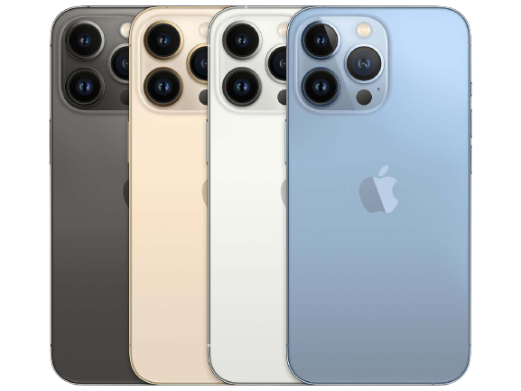

Cel mai avansat sistem de cameră profesională de pe iPhone; Ecran Super Retina XDR cu ProMotion; un salt masiv în durata de viață a bateriei; A15 Bionic, cel mai rapid cip dintr-un smartphone; o experiență 5G avansată; si multe altele
CUPERTINO, CALIFORNIA - Apple prezintă iPhone 13 Pro și iPhone 13 Pro Max, depășind limitele a ceea ce este posibil într-un smartphone. Reproiectate în interior și în exterior, ambele modele introduc un nou afișaj Super Retina XDR cu ProMotion, cu o rată de reîmprospătare adaptivă de până la 120 Hz, făcând experiența tactilă mai rapidă și mai receptivă. Sistemul de camere profesionale obține cel mai mare avans al său cu noile camere Ultra Wide, Wide și Teleobiectiv care captează fotografii și videoclipuri uimitoare, alimentate de performanța de neegalat a lui A15 Bionic, mai puternic decât concurența de top. Aceste tehnologii permit noi capabilități foto impresionante, niciodată posibile până acum pe iPhone, cum ar fi fotografia macro pe noua cameră Ultra Wide și performanța îmbunătățită de până la 2,2 ori în condiții de lumină scăzută a noii camere Wide. Noile funcții de fotografie computațională, cum ar fi Stiluri fotografice, personalizează aspectul imaginilor în aplicația Cameră, iar ambele modele includ acum modul Noapte pe toate camerele. Videoclipul face un salt uriaș înainte cu modul Cinematic pentru tranziții frumoase la profunzimea câmpului, video macro, Time-lapse și Slo-mo și performanțe chiar mai bune în condiții de lumină scăzută. Ambele modele oferă, de asemenea, fluxuri de lucru pro end-to-end în Dolby Vision și, pentru prima dată, ProRes, disponibil doar pe iPhone. iPhone 13 Pro și iPhone 13 Pro Max includ, de asemenea, 5G cu mai multe benzi pentru o acoperire mai bună, îmbunătățiri mari ale duratei de viață a bateriei pentru cea mai bună durată de viață a bateriei vreodată pe iPhone cu iPhone 13 Pro Max, o nouă capacitate de stocare de 1 TB și capacul frontal Ceramic Shield, mai dur decât orice sticla pentru smartphone.
iPhone 13 Pro și iPhone 13 Pro Max vor fi disponibile în patru finisaje uimitoare, inclusiv grafit, auriu, argintiu și noul albastru sierra. Precomenzile încep vineri, 17 septembrie, iar disponibilitatea începe vineri, 24 septembrie. „iPhone 13 Pro și iPhone 13 Pro Max alcătuiesc gama noastră de iPhone cea mai profesionistă de până acum, cu cel mai mare progres pentru sistemul nostru de camere, cea mai bună durată de viață a bateriei vreodată într-un iPhone și cea mai rapidă performanță a oricărui smartphone, stabilind un nou standard pentru iPhone și permițând experiențe incredibile niciodată posibile până acum”, a declarat Greg Joswiak, vicepreședinte senior al Apple pentru Worldwide Marketing. „Noul sistem de cameră profesională oferă și mai multe capacități de fotografie profesională, cum ar fi zoom teleobiectiv îmbunătățit, fotografie macro, Stiluri fotografice, modul Cinematic, precum și videoclipuri ProRes și Dolby Vision. Ecranul Super Retina XDR cu ProMotion este cel mai bun display al nostru; răspunde inteligent la conținutul de pe ecran, oferă performanțe grafice fantastice și este perfect pentru orice experiență de vizionare.”
Citește și despre:
Samsung Galaxy S20+
Xiamomi Mi 11